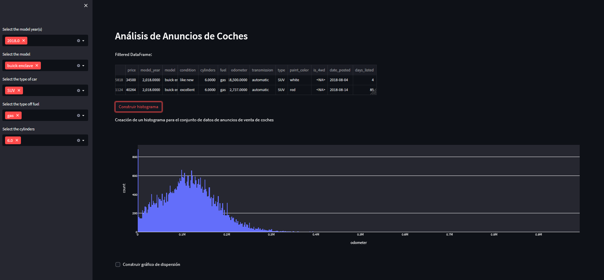

Technical Skills
About Me
I am a passionate Data Scientist focused on solving real-world business problems through data. With a strong foundation in Python, Machine Learning, and SQL, I enjoy transforming complex datasets into actionable insights and strategic solutions. Always eager to learn new technologies and collaborate on challenging projects.
Featured Projects

Telecom Churn Prediction
Python • LightGBM • XGBoost • PandasChallenge: The telecom operator "Interconnect" needed to forecast customer churn to implement preventive retention strategies.
Solution: Developed a supervised classification model comparing XGBoost and LightGBM. Implemented Upsampling techniques to address class imbalance and optimized hyperparameters using GridSearchCV.
Impact: The final model (LightGBM) achieved an AUC-ROC of 0.93 and 88.29% accuracy, identifying month-to-month contracts as the primary risk factor.
View CodeMobile Plan Recommendation System
Python • Scikit-learn • Random ForestChallenge: The mobile carrier "Megaline" wants to optimize its offers by predicting which plan ("Smart" or "Ultra") a subscriber prefers based on their monthly usage behavior.
Solution: Developed a classification model comparing Decision Tree, Random Forest, and Logistic Regression. Implemented GridSearchCV for hyperparameter tuning to maximize model performance.
Impact: The Random Forest model outperformed others with an accuracy of 78.07% and the highest F1-Score, providing a reliable tool for targeted marketing strategies.
View Code
Car Sales Analysis Dashboard
Python • Streamlit • Plotly • PandasChallenge: Transform raw vehicle advertisement data into actionable insights to understand pricing trends, market availability, and vehicle condition.
Solution: Developed an interactive web application using Streamlit. Implemented dynamic visualizations with Plotly Express (histograms and scatter plots) to explore odometer readings and price correlations.
Impact: Deployed a fully functional dashboard on Render, allowing stakeholders to interactively filter and analyze vehicle market data in real-time.
Video Game Success Factors
Python • Plotly • Scipy • PandasChallenge: The online store "Ice" needed to identify patterns that determine whether a game is successful to plan their 2017 advertising campaign.
Solution: Conducted Exploratory Data Analysis (EDA) on historical sales, platforms, and reviews. Performed Statistical Hypothesis Testing (Student's t-test) to validate user rating differences between genres and platforms.
Impact: Discovered that User Scores have almost no correlation (0.05) with sales, while Critic Scores have a moderate impact. Identified distinct regional profiles (RPGs dominate Japan, while Shooters lead in NA/EU).
View CodeBank Customer Churn Prediction
Python • Scikit-Learn • Random Forest • UpsamplingChallenge: "Beta Bank" noticed customers were leaving. They needed a model to predict churn early, as retaining existing clients is cheaper than acquiring new ones.
Solution: ADDRESSED CLASS IMBALANCE using Upsampling and Downsampling techniques. Trained Decision Tree, Random Forest, and Logistic Regression models, optimizing hyperparameters with GridSearchCV.
Impact: The Random Forest model (Upsampled) achieved the best performance with an F1-Score of 0.61 and AUC-ROC of 0.85, successfully identifying potential churners.
View Code
Credit Risk Scoring Analysis
Python • Scikit-Learn • SHAP • Random ForestChallenge: A German financial institution needed to mitigate credit defaults by accurately identifying high-risk applicants without rejecting good customers blindly.
Solution: Developed a Random Forest Classifier to predict creditworthiness. Implemented SHAP (SHapley Additive exPlanations) to interpret the "Black Box" model and explain why a specific applicant was rejected.
Impact: Achieved an ROC-AUC of 0.74. The SHAP analysis revealed that Loan Duration is the #1 risk factor: loans with longer terms drastically increase default probability.
View Code